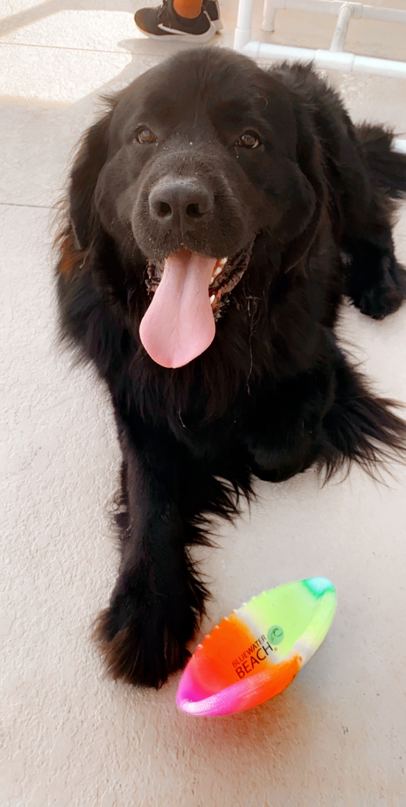
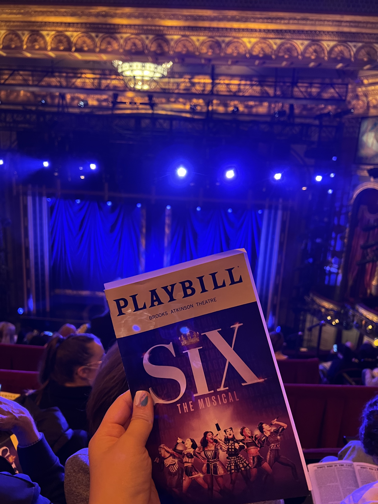
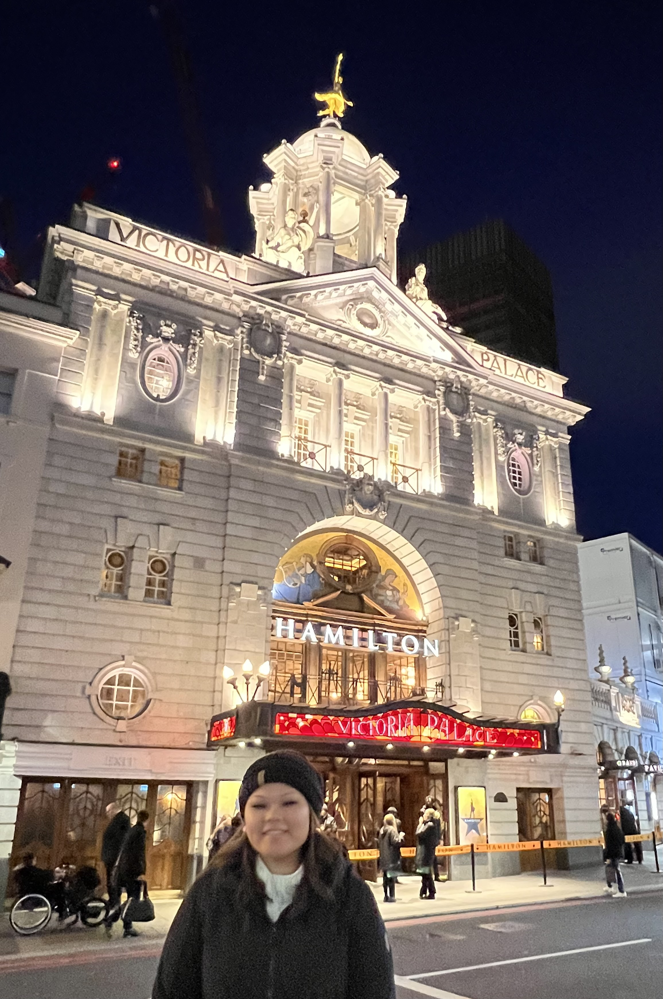
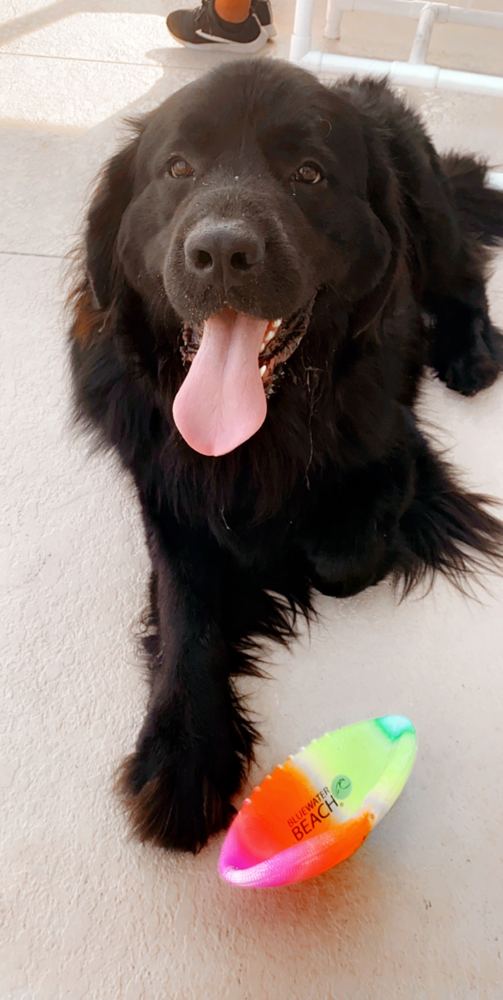
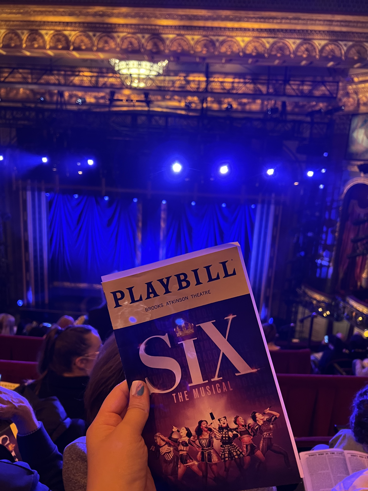
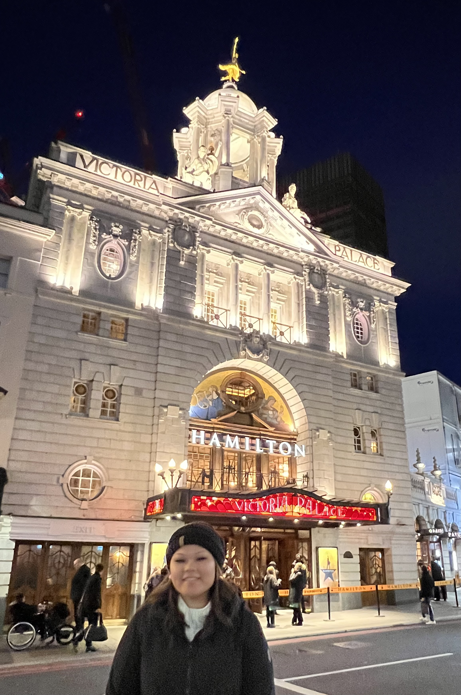

Hi there,
I am very excited that I have finally discovered my
passion for Software Development through a myriad of outlets.
Within the last two years I have gathered information
from any resource I could find, to began my
Software Development career transition.
 




